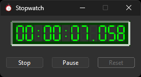
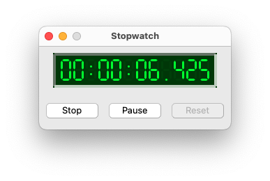
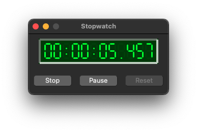
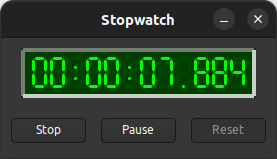

|
xtd
0.2.0
|
stopwatch_form.cpp
demonstrates the use of xtd::forms::button, xtd::forms::label controls and xtd::forms::timer component.
- Windows


- macOS
- 

- Gnome


#include <xtd/xtd>
#include "../properties/resources.h"
using namespace std::literals;
using namespace xtd;
using namespace xtd::diagnostics;
using namespace xtd::forms;
public:
main_form() {
text("Stopwatch");
start_position(form_start_position::center_screen);
client_size({275, 120});
icon(stopwatch_form::properties::resources::stopwatch_ico());
form_border_style(forms::form_border_style::fixed_single);
maximize_box(false);
watch_panel.parent(*this);
watch_panel.border_style(forms::border_style::bevel_inset);
watch_panel.bounds({20, 10, 235, 50});
watch_panel.back_color(drawing::color::average(drawing::color::black, drawing::color::lime, 0.25));
watch_panel.fore_color(drawing::color::lime);
watch.parent(watch_panel);
watch.bounds({10, 8, 214, 33});
watch.text("00:00:00.000");
start_stop.parent(*this);
start_stop.location({10, 80});
start_stop.text("Start");
pause_resume.parent(*this);
pause_resume.location({100, 80});
pause_resume.text("Pause");
pause_resume.enabled(false);
pause_resume.click += event_handler(*this, &main_form::on_pause_resume_click);
reset.parent(*this);
reset.location({190, 80});
reset.text("Reset");
reset.enabled(false);
reset.click += event_handler(*this, &main_form::on_reset_click);
timer_chrono.interval(11ms);
timer_chrono.tick += event_handler(*this, &main_form::on_timer_tick);
}
private:
if (stopwatch.is_running()) stopwatch.stop();
else stopwatch.start();
timer_chrono.enabled(stopwatch.is_running());
start_stop.text(timer_chrono.enabled() ? "Stop" : "Start");
pause_resume.enabled(timer_chrono.enabled());
reset.enabled(!timer_chrono.enabled() || !stopwatch.is_running());
};
timer_chrono.enabled(!timer_chrono.enabled());
pause_resume.text(timer_chrono.enabled() ? "Pause" : "Resume");
start_stop.enabled(timer_chrono.enabled());
reset.enabled(!timer_chrono.enabled() || !stopwatch.is_running());
};
timer_chrono.enabled(false);
stopwatch.reset();
start_stop.enabled(true);
pause_resume.enabled(false);
reset.enabled(false);
watch.text("00:00:00.000");
start_stop.text("Start");
pause_resume.text("Pause");
};
watch.text(ustring::format("{0:H}:{0:M}:{0:S}.{0:L}", stopwatch.elapsed()));
};
xtd::diagnostics::stopwatch stopwatch;
panel watch_panel;
lcd_label watch;
button start_stop;
button pause_resume;
button reset;
timer timer_chrono;
};
auto main()->int {
xtd::forms::application::run(main_form());
}
Provides a set of methods and properties that you can use to accurately measure elapsed time.
Definition: stopwatch.h:32
static void run()
Begins running a standard application message loop on the current thread, without a form.
generic_event_handler<> event_handler
Represents the method that will handle an event that has no event data.
Definition: event_handler.h:33
xtd::forms::style_sheets::control button
The buttton data allows you to specify the box of a button control.
Definition: button.h:21
xtd::forms::style_sheets::control form
The form data allows you to specify the box of a form control.
Definition: form.h:19
xtd::forms::style_sheets::control panel
The panel data allows you to specify the box of a panel control.
Definition: panel.h:21
form_border_style
Specifies the border styles for a form.
Definition: form_border_style.h:18
@ text
The xtd::forms::status_bar_panel displays text in the standard font.
The xtd::diagnostics namespace provides classes that allow you to interact with system processes,...
Definition: assert_dialog_result.h:10
The xtd::forms namespace contains classes for creating Windows-based applications that take full adva...
Definition: about_box.h:13
The xtd namespace contains all fundamental classes to access Hardware, Os, System,...
Definition: system_report.h:17
Generated on Thu Mar 2 2023 19:34:21 for xtd by Gammasoft. All rights reserved.